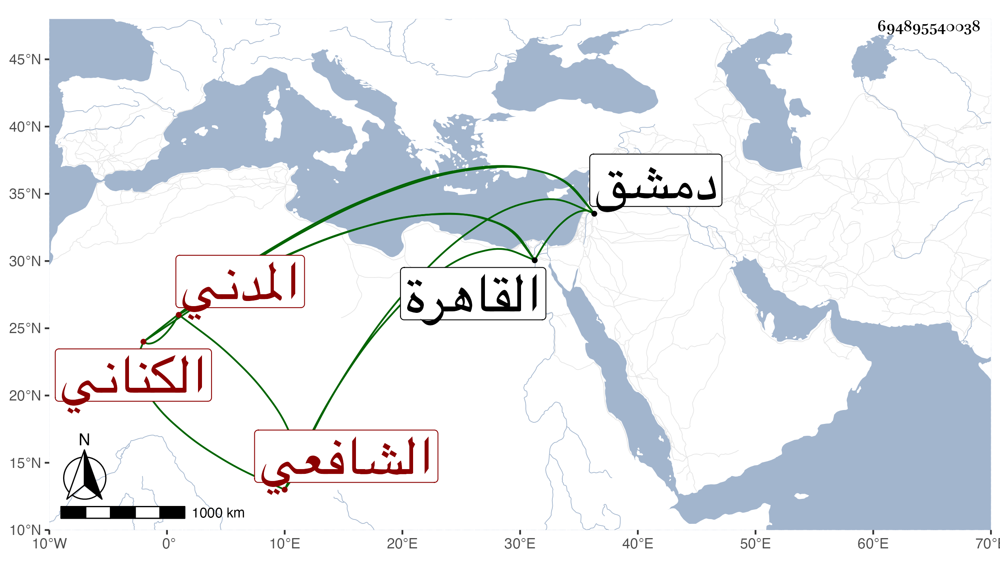

0902Sakhawi.DawLamic.ITO20230111-ara1.EIS1600.694895540038
Biography ID: 694895540038
349
عبد الرحمن بن القاضي أبي عبد الله محمد بن القاضي ناصر الدين عبد الرحمن بن محمد بن صالح بن إسماعيل الكناني المدني الشافعي الماضي جده قريبا والآتي ولده المعين محمد . سمع على أبي الفتح المراغي وأخذ عن عمه أبي الفتح بن صالح والابشيطي وغيرهما وناب في الخطابة والإمامة وأكثر من السفر لدمشق والقاهرة وغيرهما ويقال إنه غير محمود الطريقة . مات بعد سنة سبع وثمانين
